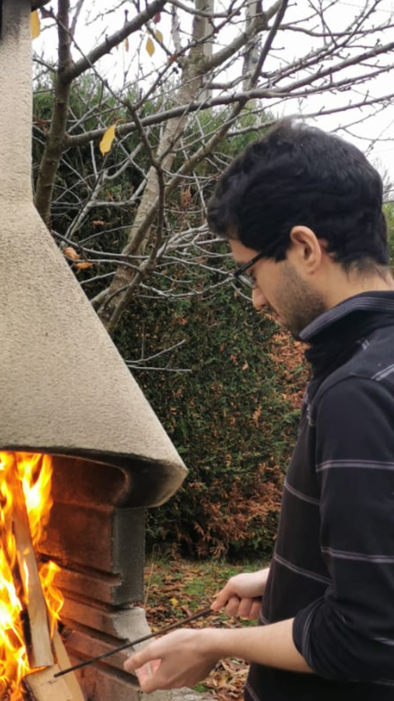

Positions:
- 2023-2024: Postdoc in deep reinforcement leaning for control problems, Laboratoire Cemef, Mines Paris-PSL, Sophia Antipolis, France
- 2022-2023: ATER (temporary research and teaching assistant) in mathematics, Laboratoire Jean Kuntzmann, Université Grenoble Alpes, Saint-Martin-d’Hères, France
- 2021-2022: Demi-ATER (part time temporary research and teaching assistant) in mathematics, Laboratoire Ceremade, Université Paris Dauphine-PSL, Paris, France
Education:
- Ph.D. in Mathematical Statistics under the supervision of Arnak Dalalyan, CREST, ENSAE, Institut Polytechnique de Paris
- Master in Statistical Machine Learning (MASH), Univerersité Paris Dauphine-PSL
- Master in Theoretical Computer Science (MPRI), ENS Paris